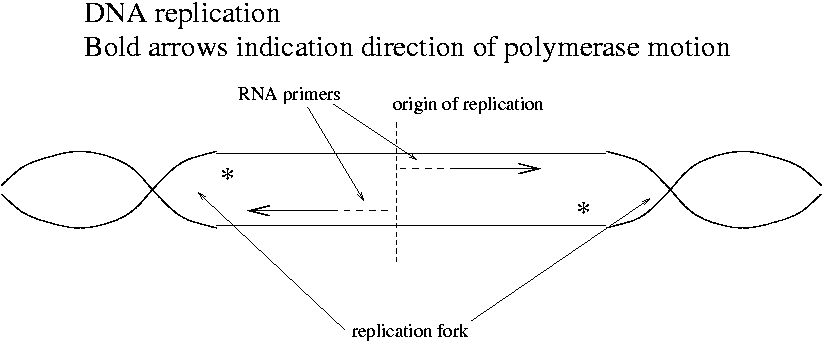
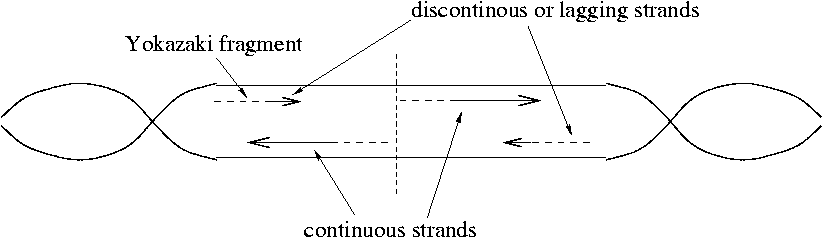
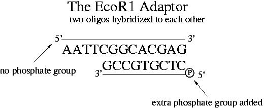
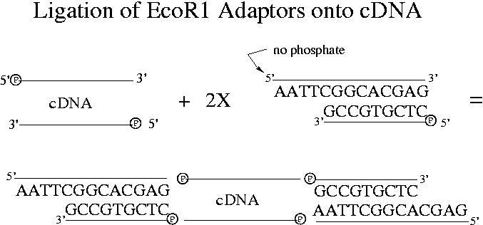
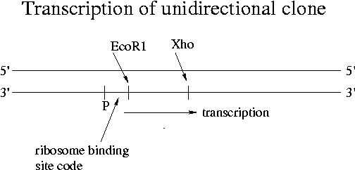

Day 6 Afternoon Lecture Notes
Steve Williams, Smith College
June 11, 2004
Reverse transcriptase does not have an exonuclease function so if two primers bind to one RNA, the resulting product is two short cDNAs. This is in contrast to the case of two primers binding to one strand of DNA, where DNA polymerase would degrade the primer further downstream and produce one strand of DNA. Exonucleases that degrade the ends of nucleic acid strands are important in apoptosis and in destruction of RNAs. RNAs must be degraded as part of cell feedback and regulatory mechanisms; RNA messages aren't intended to last forever.
Random primers are used in the first step of RT-PCR. They don't interfere with subsequent DNA amplification because it runs at too high a temperature for the short random primers to anneal.
A cDNA (complementary DNA) library is composed entirely of genes and is much simpler than a genomic library. There are 30,000-40,000 human genes total. "Housekeeping genes" are the ones that are expressed in all cells regardless of their specific function. For example, all cells have ribosomes. "Tissue-specific" genes and "developmentally regulated" genes also exist.
Chicken oviduct cells make ovalbumin (egg white) as a full 50% of their protein output. Thus 50% of mRNAs and cDNAs from these cells will be for ovalbumin. Due to this kind of unequal representation, cDNA libraries must be much larger than the total number of mRNAs in order to get complete coverage. 105 cDNAs is typically enough. A single-copy gene if regularly expressed is much easier to extract from a cDNA library than from a genomic library. Note also that a cDNA clone can be expressed in prokaryotic vectors while a genomic clone cannot since prokaryotic species have no mechanism for removing introns. A genomic clone including introns would be copied exactly by a prokaryotic vector and would code for the wrong protein. Cloning is therefore always performed using cDNAs. cDNA libraries are more useful in general than genomic libraries but are harder to make.
Recombinant human insulin made by Eli Lilly is made by E. coli that have an insulin insert. The recombinant insulin is indistinguishable from natural insulin except that it's purer. Animal insulin can contain other proteins that cause allergies. Insulin is only 137 bp in length.
If a protein needs post-translational modification in order to be functional, then E. coli may not be up to the task. Instead yeast or insect cells may be used as cloning vectors. Eukaryotic vectors may or may not splice out introns of inserts properly. At times even mammalian cells in culture may be used.
In order to understand cDNA library construction, we must understand the function of DNA polymerase in E. coli. Topoisomerase pulls the E. coli chromosome apart at the origin of replication and DNA polymerase begins synthesis. Where do the primers come from?
An enzyme called primase (RNA polymerase) makes an RNA primer starting at the origin of replication. E. coli uses DNA polymerase III to synthesize DNA from the RNA primer. Topoisomerase winds and unwinds DNA as the replication forks move along the two strands. The origin of replication is a binding site for the topoisomerase.

How do the sections marked with a * get copied? A new RNA primer is made just downstream of the replication fork.

DNA polymerase I removes the RNA primers and replaces them with DNA. DNA Pol I is a dual-function enzyme that is both a 5'->3' exonuclease for RNA and an aid to DNA synthesis. Since DNA Pol I is an exonuclease, it can performs this function only where there are "nicks" in the RNA. A nick is a cut in the phosphodiester backbone. The bases nearby the cut are not disturbed. (A defect where the base is removed is called a "gap" rather than a "nick.")
Recall that DNA polymerase can only add nucleotides to the 3' end of a primer. At a 5' end it does nothing. DNA polymerase is a big molecule compared to DNA strands, about 25 nt long.
When ordering oligos from a vendor, the 5' end doesn't automatically get a phosphate group. An "EcoR1 adaptor" can be synthesized from two primers of different lengths, only one of which has a phosphate on its 5' end. Note that the "AATTC" on the 5' end without a phosphate is the 5' overhang portion of the EcoR1 restriction site.

When ligase is added to the solution containing the adaptors, the non-overhang side can attach to the end of a cDNA that has a 5' phosphate group. Because of the missing phosphate, adaptors can't hybridize with each other.

Note that 3' ends of DNA strands never have phosphate groups but always hydroxyl groups. This after all is the difference between 5' and 3' ends. Two 5' ends can therefore never join together. Two cDNAs can also join together. Recall that "hybridization" means formation of hydrogen bonds between bases while "ligation" means formation of phosphodiester bonds in the backbone using ligase that works on 3' (hydroxyl) and 5' (phosphate) ends.
In the cDNA library formation of Experiment 4, we clone mouse genes into Lambda Zap II. The left arm of Lambda Zap II has an EcoR1 end and the right arm has an Xho end. [See the handout for experiment 4 to learn how the Xho overhang gets on the cDNA via the linker-primer hybridized to the poly-A tail of the original mRNA.] Our cDNA can insert in only one direction, which is called "unidirectional cloning." Unidirectional cloning is desirable because Lambda Zap II has a promoter near the 3' end of the left arm. The insert must join the left arm with the start of its gene near the promoter in order for the protein to be expressed properly. Without unidirectional insertion, half of the E. coli cells would express the wrong protein. This wrong protein would have an mRNA complementary to the correct one and would produce an entirely different amino acid sequence.

For different genes the coding strand and template strand can vary. DNA polymerase therefore runs on each of the two strands depending on which gene is being transcribed. In viruses genes sometimes overlap.
Up Previous Next